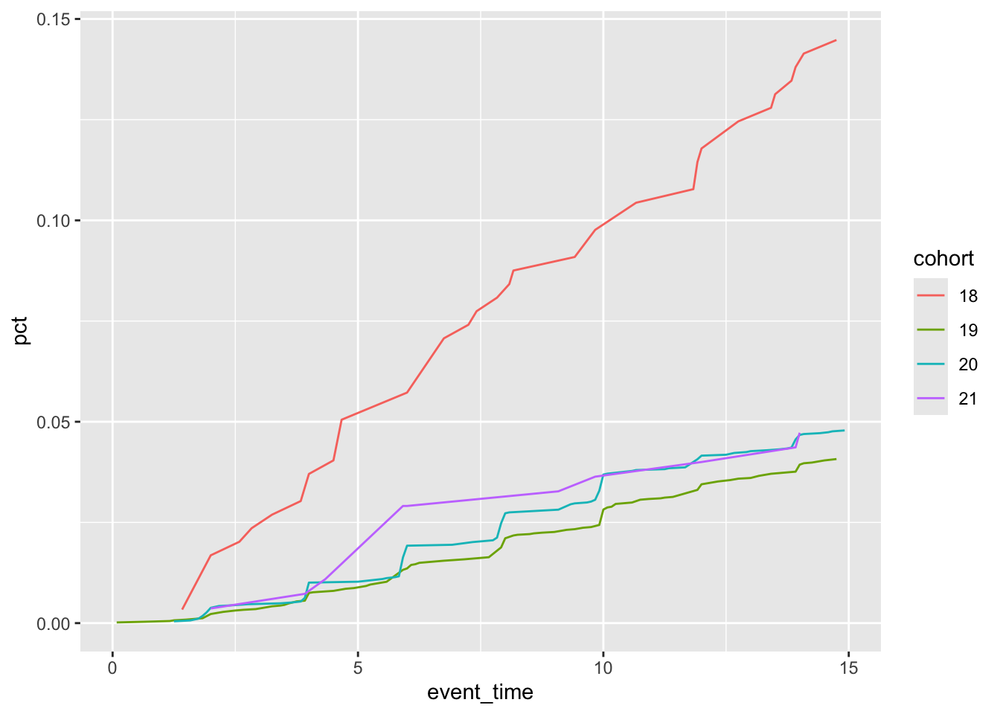
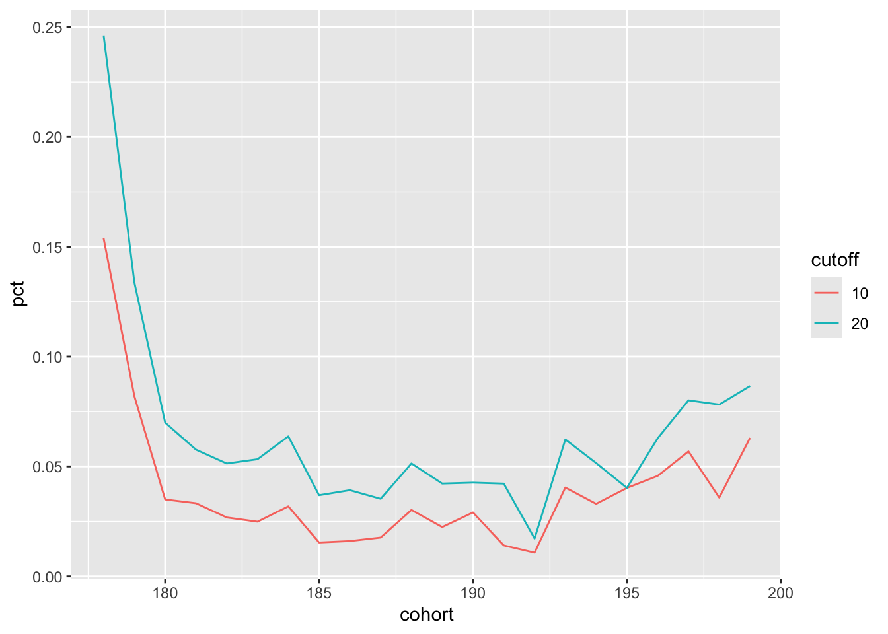
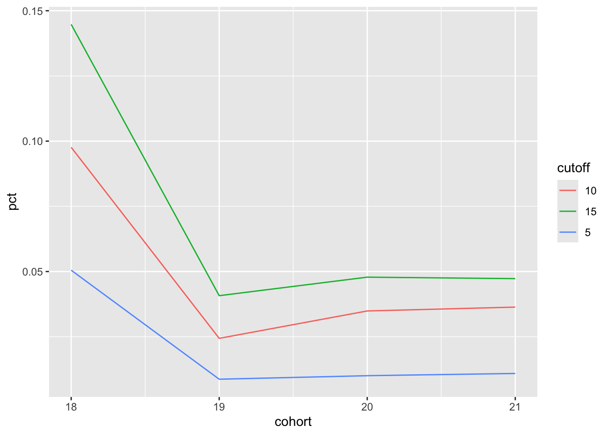

![]()
library(DBI)
library(tidyverse)
library(dbplyr)Writing better SQL without writing SQL
In this note, I use a query from Tanimura (2021) to illustrate first how one can re-write an SQL query using common table expressions (CTEs) and then how one can re-write that query again using dbplyr. I then do the analysis again from scratch, but using dbplyr expressions. I find that the SQL query contains inaccuracies, while the written-from-scratch dbplyr query does now. I conjecture that the “building blocks” approach to SQL facilitated by dbplyr may lead to more accurate of queries for many users.
In writing this note, I used the packages listed below.1 This note was written using Quarto and compiled with RStudio, an integrated development environment (IDE) for working with R. The source code for this note is available here and the latest version of this PDF is here.
1 The original query
Chapter 4 of Tanimura (2021) is entitled “cohort analysis” and uses data on US legislators to illustrate ideas related to survival analysis, including customer retention and survival analysis.
The query I focus on in this note is provided in a section on “returnship” (or repeat purchase behaviour) (Tanimura, 2021, pp. 158–163). Tanimura (2021, p. 158) provides a verbal specification of the query: “What share of [legislators] start as representatives and go on to become senators? (Some senators later become representatives, but that is much less common.) Since relatively few make this transition, we’ll cohort legislators by the century in which they first became a representative.”2
Tanimura (2021) also discusses a filter that “excludes those [legislators] who were less than 10 years into their careers when the data was assembled” (Tanimura, 2021, p. 160). While the rationale for this filter is not made entirely clear, it is presumably to address the issue of censoring. Specifically, if a legislator is only five years into a career at the time of data collection, we simply do not know whether or not this legislator will become a senator in year 6 or 7 or beyond. While standard texts on survival analysis focus a lot of effort on dealing with statistical issues related to censoring, Tanimura (2021) does not discuss these approaches at all, presumably because addressing these would require going much more into statistics than makes sense for a book on SQL. As I discuss below (see Section 5), if my understanding of the rationale for the filter is correct, then the original query in Tanimura (2021) does not implement it correctly.
We first get the data, which requires an internet connection. I start by creating an in-memory DuckDB database.
db <- dbConnect(duckdb::duckdb())I then read the two downloaded data files into this database.3
legislators <- db_get_csv(db, "legislators")
legislators_terms <- db_get_csv(db, "legislators_terms")Listing 2 shows the original SQL query from Tanimura (2021, pp. 161–162).4 Note that the output shown in Table 1 matches the output shown in Tanimura (2021, p. 162).
| cohort | pct_5_yrs | pct_10_yrs | pct_15_yrs |
|---|---|---|---|
| 18 | 0.0502 | 0.0970 | 0.1438 |
| 19 | 0.0088 | 0.0244 | 0.0409 |
| 20 | 0.0100 | 0.0348 | 0.0478 |
| 21 | 0.0400 | 0.0764 | 0.0873 |
2 Converting the SQL to a CTE-based query
The query shown in Listing 2 is quite complex and I will show how it can be simplified using common-table expressions (CTEs). According to the documentation for PostgreSQL: CTEs “can be thought of as defining temporary tables that exist just for one query.” CTEs are created using the SQL keyword WITH. In converting to a CTE-based query, I proceed in a series of small steps to better illustrate just how such a conversion can be done.
In Listing 3, I start by cleaning that up the two identical subqueries labelled a and b. I put a as a CTE at the beginning of the query (after WITH) and refer to that in both in the place where we currently refer to a and also in place of b. All references to b are changed to references to a. If you run the query in Listing 3, you will see it produces the same results as seen in Table 1.
In Listing 4, I convert aa and bb from subqueries to CTEs. Note that there are commas after the CTEs defining a and aa, but not after bb, as it is the last CTE before the body of the query. Again, if you run the SQL, you will see that the results are unchanged.
In Listing 5, I switch to USING syntax for the join of aa and bb. My view is that USING produces more elegant SQL when it can be used and its use also facilitates the omission of the aa and bb prefixes for the variables in the final query. Noting that age(c.term_start, a.first_term) appears three times in the query in Listing 4. I split bb into two (part is now bbb followed by a simplified bb) so that I have a query in which age(c.term_start, a.first_term) appears just once.
In Listing 6, I replace the meaningless labels for the CTEs (e.g., a and bb) with more meaningful labels (e.g., cohorts and age_cuts). We also clean up ages a little (e.g., USING) and move cohort to cohorts. If you run the SQL, you will see that the results are unchanged.
In Listing 7, I also put the “main” query in a CTE. The value of doing so it that it means we can easily edit the query to debug the CTEs that are used. For example, we could put SELECT * FROM cohorts at the end of the query in Listing 7 to look into cohorts if we are concerned about the output we are seeing from cohort_retention.
| cohort | pct_5_yrs | pct_10_yrs | pct_15_yrs |
|---|---|---|---|
| 18 | 0.0502 | 0.0970 | 0.1438 |
| 19 | 0.0088 | 0.0244 | 0.0409 |
| 20 | 0.0100 | 0.0348 | 0.0478 |
| 21 | 0.0400 | 0.0764 | 0.0873 |
3 Translating from SQL to dbplyr
Now that I have an SQL query based on CTEs, it is much easier to translate from SQL to dbplyr. In effect, I can translate each CTE in turn. I start with cohorts:
cohorts <-
legislators_terms |>
filter(term_type == 'rep') |>
summarize(first_rep_term = min(term_start, na.rm = TRUE),
.by = id_bioguide) |>
mutate(cohort = century(first_rep_term))Note that I could have created cohort as part of the summarize() step using century(min(term_start, na.rm = TRUE)), but my view is that the code is easier to read if min(term_start, na.rm = TRUE) appears just once and cohort is created as a function of first_term in a separate mutate() step.
Translating cohort_sizes is also straightforward:
cohort_sizes <-
cohorts |>
filter(first_rep_term <= '2009-12-31') |>
summarize(reps = n(), .by = cohort)Note that .groups = "drop" is strictly optional in this case. Nonetheless I generally include .groups = "drop" in all my queries to prevent issues that can arise due to unintended grouping.5
Translating ages is not complicated:
ages <-
cohorts |>
inner_join(legislators_terms, by = "id_bioguide") |>
filter(term_type == 'sen', term_start > first_rep_term) |>
mutate(age = age(term_start, first_rep_term)) |>
select(cohort, id_bioguide, age)The main difference here is that filter() seems to go more naturally earlier in the query rather than at the end. It would make no difference if the order of the mutate() and filter() steps in the query below we flipped. However, we cannot put filter() at the end of the query (i.e., after select()) because the fields would no longer be available at that point.
In translating age_cuts, it is useful to note that the original SQL included both a per-row calculation (the CASE WHEN calculation) and an aggregation by cohort (the count(DISTINCT ) part).6 To do things in a more step-by-step fashion, I put the per-row calculations in a mutate() call and then the aggregation in a summarize() call. Note that I trimmed the variable names in the mutate() step by using num_ in place of rep_and_sen_. I also used across() in the summarize() step so that I only need to write n_distinct() once.
age_cuts <-
ages |>
mutate(num_5_yrs = case_when(age <= years(5) ~ id_bioguide),
num_10_yrs = case_when(age <= years(10) ~ id_bioguide),
num_15_yrs = case_when(age <= years(15) ~ id_bioguide)) |>
summarize(across(starts_with("num_"),
\(x) n_distinct(x, na.rm = TRUE)),
.by = cohort)The final step of the translation is straightforward enough. I use across() again so that I only need to write round(x * 1.0 / reps, 4) once and I use rename_with to make it so the variables have the pct_ prefix seen in the original query.7
cohort_sizes |>
left_join(age_cuts, by = "cohort") |>
mutate(across(starts_with("num_"), \(x) round(x * 1.0 / reps, 4))) |>
rename_with(\(x) str_replace(x, "^num_", "pct_")) |>
select(cohort, starts_with("pct_")) |>
arrange(cohort) |>
collect() dbplyr
| cohort | pct_5_yrs | pct_10_yrs | pct_15_yrs |
|---|---|---|---|
| 18 | 0.0502 | 0.0970 | 0.1438 |
| 19 | 0.0088 | 0.0244 | 0.0409 |
| 20 | 0.0100 | 0.0348 | 0.0478 |
| 21 | 0.0400 | 0.0764 | 0.0873 |
Comparison of Table 1 and Table 3 confirms that the dbplyr query yields the same result as the original SQL query.
4 Building the query from scratch using dbplyr
Now let’s do it again more or less from scratch using dbplyr. In this version, I will build up block by block in a way that is easier (at least for me) to reason about.
Before launching into the code, it is perhaps useful to step back and identify some key elements of the analysis.
- population: Legislators who started as representatives before 31 December 2009.8
- cohorts: Century of the start date of the first term.
- exposure date: Date of the first term. Another term might be entry date.
- event date: The event of interest is “becoming a senator” and the date is the first date of the first term as a senator (if any). Another term might be exit date.
Note that cohorts here are defined based on dates, but this need not be the case in general. For example, A/B testing with websites involves cohorts based on which version of website the user is exposed to (either “A” or “B”).
Also, “exposure date” is a term that I concocted that may seem more or less natural in other contexts. For example, in a vaccine trial, the exposure date might be the date on which a series of jabs is completed. In analysis of data on life expectancies, the exposure date might be the date of birth.
I start by creating first_terms, a table with information about first terms for each legislator:
first_terms <-
legislators_terms |>
summarize(first_rep_term = min(case_when(term_type == 'rep' ~ term_start)),
first_sen_term = min(case_when(term_type == 'sen' ~ term_start)),
last_sen_term = max(case_when(term_type == 'sen' ~ term_start)),
first_term = min(term_start),
.by = id_bioguide) |>
compute()We are interested in legislators who “start as representatives” (first_term == first_rep_term) and we want to exclude those who first term is after 31 December 2009 (first_term <= "2009-12-31"), our population is created by applying filters to first_terms:
cohorts_revised <-
first_terms |>
filter(!is.na(first_rep_term),
first_term == first_rep_term,
first_term <= "2009-12-31") |>
select(id_bioguide, first_rep_term, first_sen_term) |>
mutate(cohort = century(first_rep_term))Here first_rep_term is the exposure date and first_sen_term is the event date. Note that cohorts_revised includes both survival data (i.e., values for exposure date and event date) and cohort data and is focused exclusively on the population of interest. In other contexts it might make sense to calculate cohorts and survival data in separate queries before merging them.9
We can now calculate the sizes of the cohorts that we have formed.
cohort_sizes <-
cohorts_revised |>
summarize(reps = n(), .by = cohort)Now we have our data together, we can calculate the “time to event (if any)” (event_time) using the SQL function age(). If there is no senate term for a given legislator, then event_time will be NA. While one approach to censoring would replaced the missing values of first_sen_term with the date of data collection and add an indicator variable for censoring, I follow Tanimura (2021) in just using the 2009 cutoff and ignoring any issues related to censoring.
cohorts_revised |>
mutate(event_time = age(first_sen_term, first_rep_term))# A query: ?? x 5
# Database: DuckDB 1.4.4 [root@Darwin 25.4.0:R 4.5.2/:memory:]
id_bioguide first_rep_term first_sen_term cohort event_time
<chr> <date> <date> <dbl> <drtn>
1 S000033 1991-01-03 2007-01-04 20 497750400 secs
2 C001080 2009-07-16 NA 21 NA secs
3 C001069 2007-01-04 NA 21 NA secs
4 D000191 1987-01-06 NA 20 NA secs
5 G000386 1975-01-14 1981-01-05 20 185932800 secs
6 L000491 1993-05-10 NA 20 NA secs
7 L000569 2009-01-06 NA 21 NA secs
8 M001158 2005-01-04 NA 21 NA secs
9 M001165 2007-01-04 NA 21 NA secs
10 P000258 1991-01-03 NA 20 NA secs
# ℹ more rowsIt is easy to check that id_bioguide is a valid key for cohorts_revised, which makes it easy to build up the curve of subsequent senate terms using a window function. Within each cohort we order by event_time and sum up the number of rows leading up to each value of event_time.10
Note that in our date set there will be ties in terms of event_time. For example, we might have exactly 6 observations with with event_time of exactly 5 years. If we had 432 representatives with event_time of less than 5 years and 6 with event_time of exactly 5 years, we would want to step from 432 to 438 immediately upon hitting the 5-year mark. Below I accomplish using the max() aggregate grouped by cohort and event_time.
pct_rep_then_sen <-
cohorts_revised |>
mutate(event_time = age(first_sen_term, first_rep_term)) |>
mutate(cum_ids = cumsum(1),
.by = cohort,
.order = event_time) |>
mutate(cum_ids = max(cum_ids, na.rm = TRUE),
.by = c(cohort, event_time)) |>
inner_join(cohort_sizes, by = "cohort") |>
mutate(pct = cum_ids / reps) To produce the query analagous to that underlying Table 1, I can actually avoid the complicated CASE statements used in the original SQL. Instead, I first make a little table in R with the three cutoff values and send that to DuckDB and turn the rows into intervals using years().
event_time_cutoffs <-
tibble(cutoff = c(5, 10, 15)) |>
copy_to(db, df = _, name = "event_time_cutoffs",
overwrite = TRUE) |>
mutate(cutoff = years(cutoff))I then use cross_join() to combine pct_rep_then_sen and event_time_cutoffs and calculate the pct values for each cutoff before using pivot_wider() to rearrange the table to match what is shown in Tanimura (2021).
pct_rep_then_sen |>
cross_join(event_time_cutoffs) |>
filter(event_time <= cutoff) |>
summarize(pct = max(pct, na.rm = TRUE),
.by = c(cohort, cutoff)) |>
mutate(cutoff = year(cutoff)) |>
pivot_wider(names_from = "cutoff",
names_prefix = "pct_",
values_from = "pct",
names_sort = TRUE) |>
arrange(cohort) |>
collect()dbplyr query
| cohort | pct_5 | pct_10 | pct_15 |
|---|---|---|---|
| 18 | 0.0505 | 0.0976 | 0.1448 |
| 19 | 0.0087 | 0.0244 | 0.0407 |
| 20 | 0.0101 | 0.0349 | 0.0478 |
| 21 | 0.0109 | 0.0364 | 0.0473 |
Because of the more general form of our data with this modified query, it is easy to make the plot seen in Figure 1.
pct_rep_then_sen |>
mutate(event_time = (year(event_time) * 12 + month(event_time)) / 12) |>
filter(event_time <= 15) |>
summarize(pct = max(pct, na.rm = TRUE),
.by = c(cohort, event_time)) |>
mutate(cohort = as.character(cohort)) |>
ggplot(aes(x = event_time, y = pct, group = cohort,
colour = cohort)) +
geom_line()

Note that it would be easy to translate our dbplyr code—arguably a more precise solution than the original SQL query—back into SQL (probably using CTEs) if that were desired.11
4.1 Reproducing Figure 4-12 of Tanimura (2021)
Finally, I reproduce Figure 4-12 of Tanimura (2021, p. 163). This plot requires changes to the cohorts, to the cutoffs (now 10 and 20 years), and (it seems) to the population. From visual inspection of Figure 4-12 of Tanimura (2021), it seems that we now require a representative’s first term to have begun before 2000.
Note that the query underlying Figure 4-12 of Tanimura (2021) is not provided in the book. Nor is the code for generating the plot itself. Because Tanimura (2021) only include SQL code, readers are on their own when it comes to code for generating the plots; this is an additional weakness of focusing on SQL code.
The first step I take is to make a new version of pct_rep_then_sen with cohort now based on decades and with the stricter filter on first_rep_term. Note that I simply overwrite whatever value for cohort was already in cohorts_revised. I also embed the calculation of reps (the number of members of each cohort) in the same pipeline as the other calculations.
pct_rep_then_sen <-
cohorts_revised |>
filter(first_rep_term <= "1999-12-31") |>
mutate(cohort = decade(first_rep_term),
event_time = age(first_sen_term, first_rep_term)) |>
mutate(reps = n(), .by = cohort) |>
mutate(cum_ids = cumsum(1), .by = cohort, .order = event_time) |>
mutate(cum_ids = max(cum_ids, na.rm = TRUE),
.by = c(cohort, event_time)) |>
mutate(pct = cum_ids / reps) I replace event_time_cutoffs with the new values (10 and 20 years):
event_time_cutoffs <-
tibble(cutoff = c(10, 20)) |>
copy_to(db, df = _, name = "event_time_cutoffs",
overwrite = TRUE) |>
mutate(cutoff = years(cutoff))Making the plot is now quite straightforward and the results of the following code can be seen in Figure 2:
pct_rep_then_sen |>
cross_join(event_time_cutoffs) |>
filter(event_time <= cutoff) |>
summarize(pct = max(pct, na.rm = TRUE),
.by = c(cohort, cutoff)) |>
mutate(cutoff = as.character(year(cutoff))) |>
ggplot(aes(x = cohort, y = pct, color = cutoff, group = cutoff)) +
geom_line()
4.2 Making a function
Creating the code underlying Figure 4-12 of Tanimura (2021) likely involved a lot of copy-pasting and editing (e.g., to create new CASE statements for the new cutoffs and new WHERE clauses) even before moving the code (or data) to Python or Tableau to make the plot. The code above suggests that we might accomplish variants on the plot more programmatically and I pursue this idea in this section.
One benefit of doing this is that I can show how putting the survival data into a canonical structure can make it easier to run variants based on different populations and cohort definitions.
First, I put the essence of the code in the following function with the only real edits being that I use more generic names for the tables and fields and put the cutoffs to be used in a variable cutoffs.
make_plot <- function(cohorts, survival_data, cutoffs = c(10, 20)) {
plot_data <-
survival_data |>
mutate(event_time = age(event_date, entry_date)) |>
inner_join(cohorts, by = "id") |>
mutate(reps = n(), .by = cohort) |>
mutate(cum_ids = cumsum(1), .by = cohort, .order = event_time) |>
mutate(cum_ids = max(cum_ids, na.rm = TRUE),
.by = c(cohort, event_time)) |>
mutate(pct = cum_ids / reps)
event_time_cutoffs <-
tibble(cutoff = cutoffs) |>
copy_to(db, df = _, name = "event_time_cutoffs",
overwrite = TRUE) |>
mutate(cutoff = years(cutoff))
plot_data |>
cross_join(event_time_cutoffs) |>
filter(event_time <= cutoff) |>
summarize(pct = max(pct, na.rm = TRUE),
.by = c(cohort, cutoff)) |>
mutate(cutoff = as.character(year(cutoff))) |>
ggplot(aes(x = cohort, y = pct, color = cutoff, group = cutoff)) +
geom_line()
}I next construct survival_data in a canonical form with id, entry_date, and event_date as the fields.
survival_data <-
first_terms |>
filter(!is.na(first_rep_term),
first_term == first_rep_term) |>
rename(id = id_bioguide,
entry_date = first_rep_term,
event_date = first_sen_term) |>
select(id, entry_date, event_date)Now I can easily reproduce Figure 2 using the following code with the results being seen in Figure 3:
survival_data |>
filter(entry_date <= "1999-12-31") |>
mutate(cohort = decade(entry_date)) |>
select(id, cohort) |>
make_plot(survival_data = survival_data,
cutoffs = c(10, 20))

And with a few lines of code, I can make a plot version of Table 4, which can be seen in Figure 4:
survival_data |>
filter(entry_date <= "2009-12-31") |>
mutate(cohort = century(entry_date)) |>
select(id, cohort) |>
make_plot(survival_data = survival_data,
cutoffs = c(5, 10, 15))

5 Reconciling differences in output
A careful reader might have noticed differences between the numbers in Table 3 and those in Table 4 and wonder why these differences exist. These differences seem particularly pronounced for the representatives from the 21st century cohort, which seems consistent with the explanations I provide below.
I would argue that the numbers in Table 4 better address the original question from Tanimura (2021, p. 158): “What share of [legislators] start as representatives and go on to become senators? (Some senators later become representatives, but that is much less common.) Since relatively few make this transition, we’ll cohort legislators by the century in which they first became a representative.”12 My query is also more consistent in applying “WHERE first_term <= '2009-12-31' [which] excludes those [legislators] who were less than 10 years into their careers when the data was assembled” (Tanimura, 2021, p. 160).
It turns out that some representatives that were correctly excluded in producing Table 4 were incorrectly included in the original analysis underlying Table 3. I compile the “problem cases” in a single data frame problem_cases:
problem_cases <-
first_terms |>
semi_join(cohorts, by = "id_bioguide") |>
anti_join(cohorts_revised, by = "id_bioguide") |>
filter(!is.na(first_sen_term) & !is.na(first_rep_term)) |>
mutate(rep_to_sen = last_sen_term > first_rep_term,
sen_to_rep = first_sen_term < first_rep_term ,
too_late = first_rep_term > '2009-12-31') The first set of problem cases comprises those legislators who were senators before they were representatives. These legislators should have been excluded on the basis that they do not meet the “start as representatives” criterion. Note that this set can be view as comprising two subsets. The first subset are those legislators who started as senators, then became representatives, then became senators again. These observations will affect both the numerators and the denominators of the proportions shown in Table 3. Cases from this first subset—shown in Table 5—are identified using the following code:
problem_cases |>
filter(sen_to_rep, rep_to_sen) |>
arrange(first_rep_term) |>
select(id_bioguide, first_sen_term, first_rep_term, last_sen_term) | id_bioguide | first_sen_term | first_rep_term | last_sen_term |
|---|---|---|---|
| C000482 | 1806-01-01 | 1811-11-04 | 1849-12-03 |
| M000519 | 1826-01-01 | 1833-12-02 | 1837-09-04 |
| J000137 | 1818-01-01 | 1833-12-02 | 1844-01-01 |
The second subset are those legislators who started as senators, then became representatives, but did not became senators again after serving as a representative. These observations will not affect the numerators of the proportions shown in Table 3, but will affect the denominators. Some cases from this second subset—shown in Table 6—are identified using the following code:
problem_cases |>
filter(sen_to_rep, !rep_to_sen) |>
select(id_bioguide, first_sen_term, last_sen_term, first_rep_term) |>
collect(n = 10)| id_bioguide | first_sen_term | last_sen_term | first_rep_term |
|---|---|---|---|
| N000086 | 1799-12-02 | 1799-12-02 | 1807-10-26 |
| M000221 | 1800-01-01 | 1800-01-01 | 1817-12-01 |
| W000476 | 1859-12-05 | 1859-12-05 | 1869-03-04 |
| P000557 | 1880-01-01 | 1880-01-01 | 1883-12-03 |
| N000160 | 1871-03-04 | 1871-03-04 | 1885-12-07 |
| R000125 | 1806-11-25 | 1807-10-26 | 1817-12-01 |
| K000069 | 1868-01-01 | 1877-10-15 | 1883-12-03 |
| W000012 | 1915-12-06 | 1921-04-11 | 1933-03-09 |
| W000658 | 1949-01-20 | 1949-01-20 | 1952-08-02 |
| D000069 | 1798-12-05 | 1798-12-05 | 1799-12-02 |
The second set of problem cases are representatives whose terms began after '2009-12-31'. The original SQL query imposed this requirement in calculating cohort_sizes, but not in constructing the cohorts themselves. Thus, while the SQL in Listing 2 does exclude these cases from the denominator, these legislators are included in the numerator if they go on to serve as senators. These cases are shown in Table 7. In contrast I was consistent in application of the first_rep_term <= '2009-12-31' criterion throughout. These observations will not affect the denominators of the proportions shown in Table 3, but will affect the numerators. The members of this set of problem cases—shown in Table 7—are identified using the following code:
problem_cases |>
filter(too_late) |>
select(id_bioguide, first_rep_term, first_sen_term, last_sen_term)| id_bioguide | first_rep_term | first_sen_term | last_sen_term |
|---|---|---|---|
| L000575 | 2011-01-05 | 2015-01-06 | 2017-01-03 |
| Y000064 | 2011-01-05 | 2017-01-03 | 2017-01-03 |
| S001184 | 2011-01-05 | 2013-01-03 | 2017-01-03 |
| S001191 | 2013-01-03 | 2019-01-03 | 2019-01-03 |
| D000622 | 2013-01-03 | 2017-01-03 | 2017-01-03 |
| G000562 | 2011-01-05 | 2015-01-06 | 2015-01-06 |
| C001096 | 2013-01-03 | 2019-01-03 | 2019-01-03 |
| D000618 | 2013-01-03 | 2015-01-06 | 2015-01-06 |
| M001197 | 2015-01-06 | 2019-01-03 | 2019-01-03 |
| C001095 | 2013-01-03 | 2015-01-06 | 2015-01-06 |
| R000608 | 2017-01-03 | 2019-01-03 | 2019-01-03 |
It is easy to show that these issues explain the differences between Table 3 and Table 4. To do so, I need to recapitulate some steps from the analysis above, starting with a revised version of ages in which I anti_join() the problem_cases data frame.
ages <-
cohorts |>
anti_join(problem_cases, by = "id_bioguide") |>
inner_join(legislators_terms, by = "id_bioguide") |>
filter(term_type == 'sen', term_start > first_rep_term) |>
mutate(age = age(term_start, first_rep_term)) |>
select(cohort, id_bioguide, age)We then pass this revised ages to create a new version of age_cuts.
age_cuts <-
ages |>
mutate(num_5_yrs = if_else(age <= years(5), id_bioguide, NA),
num_10_yrs = if_else(age <= years(10), id_bioguide, NA),
num_15_yrs = if_else(age <= years(15), id_bioguide, NA)) |>
summarize(across(starts_with("num_"),
\(x) n_distinct(x, na.rm = TRUE)),
.by = cohort)Finally, I left_join() this revised age_cuts to produce Table 8. We now see that the output lines up with that in Table 4, confirming that the observations in problem_cases are the source of the differences between Table 4 and Table 3.
cohort_sizes |>
left_join(age_cuts, by = "cohort") |>
mutate(across(starts_with("num_"), \(x) round(x * 1.0 / reps, 4))) |>
rename_with(\(x) str_replace(x, "^num_", "pct_")) |>
select(cohort, starts_with("pct_")) |>
arrange(cohort) |>
collect() dbplyr omitting problem cases
| cohort | pct_5_yrs | pct_10_yrs | pct_15_yrs |
|---|---|---|---|
| 18 | 0.0505 | 0.0976 | 0.1448 |
| 19 | 0.0087 | 0.0244 | 0.0407 |
| 20 | 0.0101 | 0.0349 | 0.0478 |
| 21 | 0.0109 | 0.0364 | 0.0473 |
download_data <- function(filename, data_dir = "data") {
if (!dir.exists(data_dir)) dir.create(data_dir)
url <- paste0("https://raw.githubusercontent.com/cathytanimura/",
"sql_book/master/Chapter%204%3A%20Cohorts/")
local_filename <- file.path(data_dir, paste0(filename, ".csv"))
if (!file.exists(local_filename)) {
download.file(url = paste0(url, filename, ".csv"), destfile = local_filename)
}
}
db_read_csv <- function(db, table, data_dir = "data") {
csv_file <- file.path(data_dir, paste0(table, ".csv"))
tbl(db, paste0("read_csv_auto('", csv_file, "')")) |>
compute(name = table)
}
db_get_csv <- function(db, table, data_dir = "data") {
download_data(table, data_dir = data_dir)
db_read_csv(db, table, data_dir = data_dir)
}SELECT aa.cohort,
round(bb.rep_and_sen_5_yrs * 1.0 / aa.reps, 4) AS pct_5_yrs,
round(bb.rep_and_sen_10_yrs * 1.0 / aa.reps, 4) AS pct_10_yrs,
round(bb.rep_and_sen_15_yrs * 1.0 / aa.reps, 4) AS pct_15_yrs
FROM
(
SELECT date_part('century', a.first_term) AS cohort,
count(id_bioguide) AS reps
FROM
(
SELECT id_bioguide, min(term_start) AS first_term
FROM legislators_terms
WHERE term_type = 'rep'
GROUP BY 1
) a
WHERE first_term <= '2009-12-31'
GROUP BY 1
) aa
LEFT JOIN
(
SELECT date_part('century', b.first_term) AS cohort,
count(DISTINCT CASE WHEN age(c.term_start, b.first_term) <=
INTERVAL '5 years'
THEN b.id_bioguide END) AS rep_and_sen_5_yrs,
count(DISTINCT CASE WHEN age(c.term_start, b.first_term) <=
INTERVAL '10 years'
THEN b.id_bioguide END) AS rep_and_sen_10_yrs,
count(DISTINCT CASE WHEN age(c.term_start, b.first_term) <=
INTERVAL '15 years'
THEN b.id_bioguide END) AS rep_and_sen_15_yrs
FROM
(
SELECT id_bioguide, min(term_start) AS first_term
FROM legislators_terms
WHERE term_type = 'rep'
GROUP BY 1
) b
JOIN legislators_terms c
ON b.id_bioguide = c.id_bioguide AND c.term_type = 'sen'
AND c.term_start > b.first_term
GROUP BY 1
) bb ON aa.cohort = bb.cohort
ORDER BY 1;WITH a AS (
SELECT id_bioguide, min(term_start) AS first_term
FROM legislators_terms
WHERE term_type = 'rep'
GROUP BY 1)
SELECT aa.cohort,
round(bb.rep_and_sen_5_yrs * 1.0 / aa.reps, 4) AS pct_5_yrs,
round(bb.rep_and_sen_10_yrs * 1.0 / aa.reps, 4) AS pct_10_yrs,
round(bb.rep_and_sen_15_yrs * 1.0 / aa.reps, 4) AS pct_15_yrs
FROM
(
SELECT date_part('century', a.first_term) AS cohort,
count(id_bioguide) AS reps
FROM a
WHERE first_term <= '2009-12-31'
GROUP BY 1
) aa
LEFT JOIN
(
SELECT date_part('century', a.first_term) AS cohort,
count(DISTINCT CASE WHEN age(c.term_start, a.first_term) <=
INTERVAL '5 years'
THEN a.id_bioguide END) AS rep_and_sen_5_yrs,
count(DISTINCT CASE WHEN age(c.term_start, a.first_term) <=
INTERVAL '10 years'
THEN a.id_bioguide END) AS rep_and_sen_10_yrs,
count(DISTINCT CASE WHEN age(c.term_start, a.first_term) <=
INTERVAL '15 years'
THEN a.id_bioguide END) AS rep_and_sen_15_yrs
FROM a
JOIN legislators_terms c ON a.id_bioguide = c.id_bioguide
AND c.term_type = 'sen' AND c.term_start > a.first_term
GROUP BY 1
) bb ON aa.cohort = bb.cohort
ORDER BY 1;aa and bb
WITH a AS (
SELECT id_bioguide, min(term_start) AS first_term
FROM legislators_terms
WHERE term_type = 'rep'
GROUP BY 1),
aa AS (
SELECT date_part('century',a.first_term) AS cohort,
count(id_bioguide) AS reps
FROM a
WHERE first_term <= '2009-12-31'
GROUP BY 1),
bb AS (
SELECT date_part('century', a.first_term) AS cohort,
count(DISTINCT CASE WHEN age(c.term_start, a.first_term) <=
INTERVAL '5 years'
THEN a.id_bioguide END) AS rep_and_sen_5_yrs,
count(DISTINCT CASE WHEN age(c.term_start, a.first_term) <=
INTERVAL '10 years'
THEN a.id_bioguide END) AS rep_and_sen_10_yrs,
count(DISTINCT CASE WHEN age(c.term_start, a.first_term) <=
INTERVAL '15 years'
THEN a.id_bioguide END) AS rep_and_sen_15_yrs
FROM a
JOIN legislators_terms c ON a.id_bioguide = c.id_bioguide
AND c.term_type = 'sen' AND c.term_start > a.first_term
GROUP BY 1)
SELECT aa.cohort,
round(bb.rep_and_sen_5_yrs * 1.0 / aa.reps, 4) AS pct_5_yrs,
round(bb.rep_and_sen_10_yrs * 1.0 / aa.reps, 4) AS pct_10_yrs,
round(bb.rep_and_sen_15_yrs * 1.0 / aa.reps, 4) as pct_15_yrs
FROM aa
LEFT JOIN bb ON aa.cohort = bb.cohort
ORDER BY 1;bbb
WITH a AS (
SELECT id_bioguide, min(term_start) AS first_term
FROM legislators_terms
WHERE term_type = 'rep'
GROUP BY 1),
aa AS (
SELECT date_part('century', first_term) AS cohort,
count(id_bioguide) AS reps
FROM a
WHERE first_term <= '2009-12-31'
GROUP BY 1),
bbb AS (
SELECT date_part('century', a.first_term) AS cohort,
a.id_bioguide,
age(c.term_start, a.first_term) AS age
FROM a
JOIN legislators_terms c
ON a.id_bioguide = c.id_bioguide
AND c.term_type = 'sen' AND c.term_start > a.first_term),
bb AS (
SELECT cohort,
count(DISTINCT CASE WHEN age <= INTERVAL '5 years'
THEN id_bioguide END) AS rep_and_sen_5_yrs,
count(DISTINCT CASE WHEN age <= INTERVAL '10 years'
THEN id_bioguide END) AS rep_and_sen_10_yrs,
count(DISTINCT CASE WHEN age <= INTERVAL '15 years'
THEN id_bioguide END) AS rep_and_sen_15_yrs
FROM bbb
GROUP BY 1)
SELECT cohort as cohort,
round(rep_and_sen_5_yrs * 1.0 / reps, 4) AS pct_5_yrs,
round(rep_and_sen_10_yrs * 1.0 / reps, 4) AS pct_10_yrs,
round(rep_and_sen_15_yrs * 1.0 / reps, 4) AS pct_15_yrs
FROM aa
LEFT JOIN bb
USING (cohort)
ORDER BY 1;WITH cohorts AS (
SELECT id_bioguide, min(term_start) AS first_term,
date_part('century', min(term_start)) AS cohort,
FROM legislators_terms
WHERE term_type = 'rep'
GROUP BY 1),
cohort_sizes AS (
SELECT cohort, count(id_bioguide) AS reps
FROM cohorts
WHERE first_term <= '2009-12-31'
GROUP BY 1),
ages AS (
SELECT cohort, id_bioguide,
age(term_start, first_term) AS age
FROM cohorts
JOIN legislators_terms
USING (id_bioguide)
WHERE term_type = 'sen' AND term_start > first_term),
age_cuts AS (
SELECT cohort,
count(DISTINCT CASE WHEN age <= INTERVAL '5 years'
THEN id_bioguide END) AS rep_and_sen_5_yrs,
count(DISTINCT CASE WHEN age <= INTERVAL '10 years'
THEN id_bioguide END) AS rep_and_sen_10_yrs,
count(DISTINCT CASE WHEN age <= INTERVAL '15 years'
THEN id_bioguide END) AS rep_and_sen_15_yrs
FROM ages
GROUP BY 1)
SELECT cohort,
round(rep_and_sen_5_yrs * 1.0 / reps, 4) AS pct_5_yrs,
round(rep_and_sen_10_yrs * 1.0 / reps, 4) AS pct_10_yrs,
round(rep_and_sen_15_yrs * 1.0 / reps, 4) AS pct_15_yrs
FROM cohort_sizes
LEFT JOIN age_cuts
USING (cohort)
ORDER BY 1;WITH cohorts AS (
SELECT id_bioguide, min(term_start) AS first_term,
date_part('century', min(term_start)) AS cohort,
FROM legislators_terms
WHERE term_type = 'rep'
GROUP BY 1),
cohort_sizes AS (
SELECT cohort, count(id_bioguide) AS reps
FROM cohorts
WHERE first_term <= '2009-12-31'
GROUP BY 1),
ages AS (
SELECT cohort, id_bioguide, age(term_start, first_term) AS age
FROM cohorts
JOIN legislators_terms
USING (id_bioguide)
WHERE term_type = 'sen' AND term_start > first_term),
age_cuts AS (
SELECT cohort,
count(DISTINCT CASE WHEN age <= INTERVAL '5 years'
THEN id_bioguide END) AS rep_and_sen_5_yrs,
count(DISTINCT CASE WHEN age <= INTERVAL '10 years'
THEN id_bioguide END) AS rep_and_sen_10_yrs,
count(DISTINCT CASE WHEN age <= INTERVAL '15 years'
THEN id_bioguide end) AS rep_and_sen_15_yrs
FROM ages
GROUP BY 1),
cohort_retention AS (
SELECT cohort,
round(rep_and_sen_5_yrs * 1.0 / reps, 4) AS pct_5_yrs,
round(rep_and_sen_10_yrs * 1.0 / reps, 4) AS pct_10_yrs,
round(rep_and_sen_15_yrs * 1.0 / reps, 4) AS pct_15_yrs
FROM cohort_sizes
LEFT JOIN age_cuts
USING (cohort))
SELECT *
FROM cohort_retention
ORDER BY cohort;References
Tanimura, C., 2021. SQL for data analysis. O’Reilly Media.
Footnotes
Execute
install.packages(c("tidyverse", "DBI", "duckdb", "dbplyr")within R to install all the packages you need to run the code in this note.↩︎I made minor punctuation edits here.↩︎
I put the ugly details of the
db_get_csv()function that I use here in Listing 1.↩︎I edited the query slightly to reflect code style guidelines I use in later queries. I also rename the column
cohort_centurytocohortthroughout. The value of using a more generic name will be seen in Section 4.2.↩︎My view is that the choice made early in the development
dplyrof a de facto default of.groups = "drop_last"is a rather unfortunate one.↩︎Note that
if_else(age <= years(5), id_bioguide, NA)would be an alternative way to get the same result ascase_when(age <= years(5) ~ id_bioguide)gives.↩︎An alternative would’ve been to use
pct_in place ofnum_in theage_cutsquery.↩︎Strictly speaking, it should be “on or before 31 December 2009”, but legislators never start terms on 31 December.↩︎
See https://iangow.github.io/cohorts/intermezzo.html for some discussion on this point.↩︎
This is equivalent to
count(DISTINCT id_bioguide) OVER (PARTITION BY cohort ORDER BY event_time), but we do not need theDISTINCThere because each value ofid_bioguideis unique in this query.↩︎I explain why I think it is a more precise solution in Section 5.↩︎
I made minor punctuation edits here.↩︎